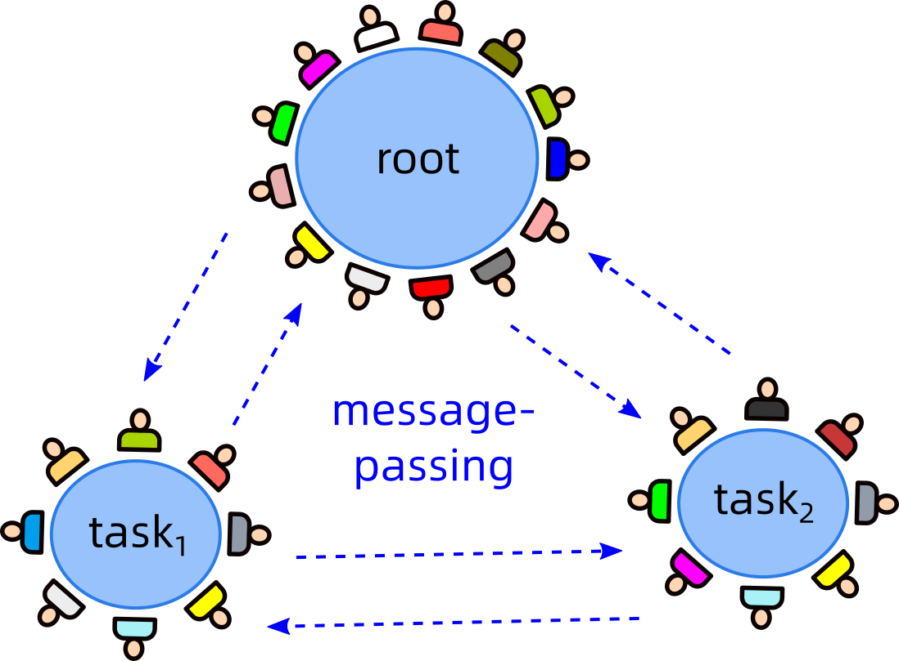

Name: Claris
Tokens: 10,000


Aragon 负责的是 tokens，它不管「内容」方面的东西。
这是 投票 demo，它会自动将总数调至 100：
Authors self-claim # of credits for a particular task: V_1, V_2, ... V_n
Needs others' vote to support
Final result = # of tokens for every author of task
Git 这边需要的是 将每个成员的贡献「可视化」出来，以方便其他人 判断他的贡献价值。
注意 我们是用 Git 的 API 读取 repository 资料，这并不依赖 GitHub 提供资料。
我们打算支缓这几种文件的可视化，因为它们的格式是很标准的：
其他格式的文件，由于没有可视化，那就不能观察到每个人的局部贡献，只能当成一个整体 unit.
可视化的意思是，可以查看每一成员的贡献：（示范数据是随机产生的）
Name: Claris
Tokens: 10,000
Files
类似地，可以再点击进文件内：（demo 暂时未完成）
Name: Claris
Tokens: 10,000

Discord 的目的是 管理「聊天室」，每个 cluster 有独立的聊天室，互相之间可以传递讯息：
任务表中的链接并不太重要，因为任何小组都可以发讯息到其他小组，如有需要即可。
If ProjectGraph does not display, please start the server via:
cd python
python start-ProjectGraph-server.py
But you also need to install VisDCC first:
pip install visdcc
pip install dash==2.3.0
按钮：
Link Nodes：用滑鼠先后点击 nodes ① & ②，然后按钮将它们连接。
Create / Update Nodes：先填写好资料，选择 node ①，然后按钮。